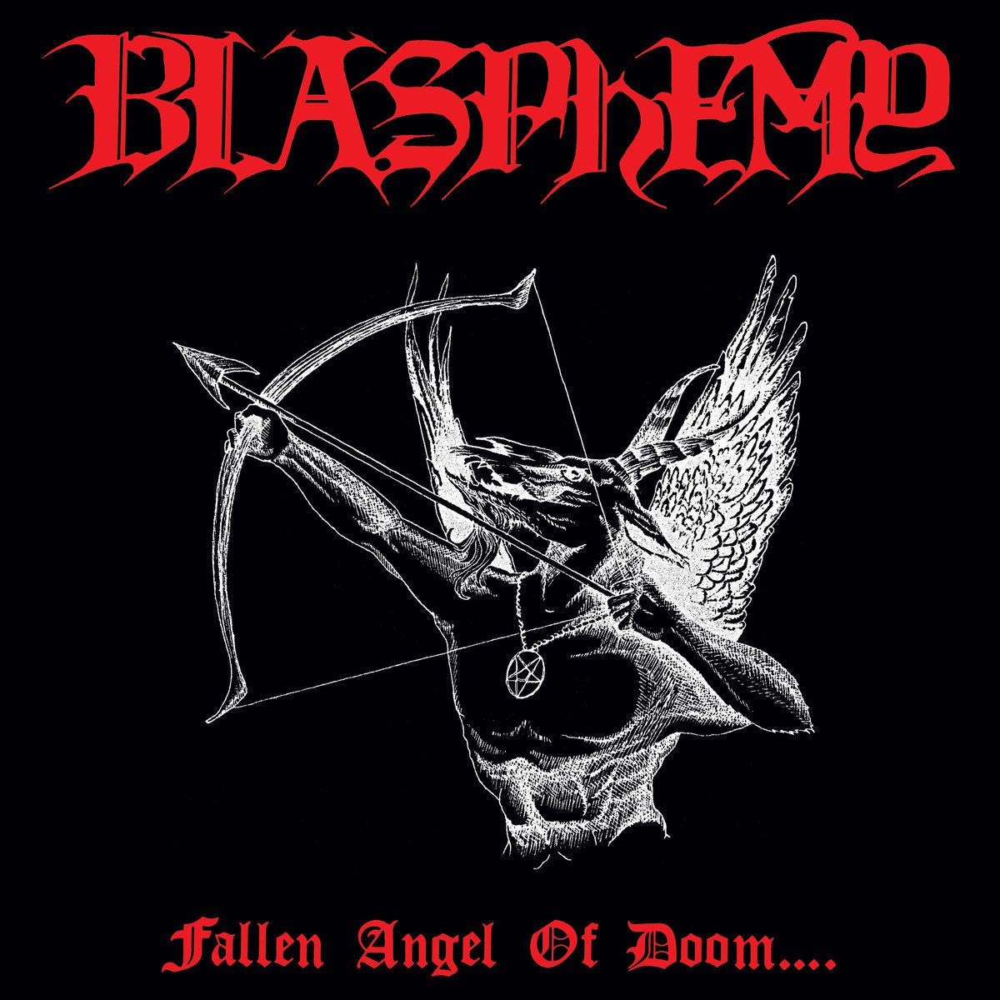
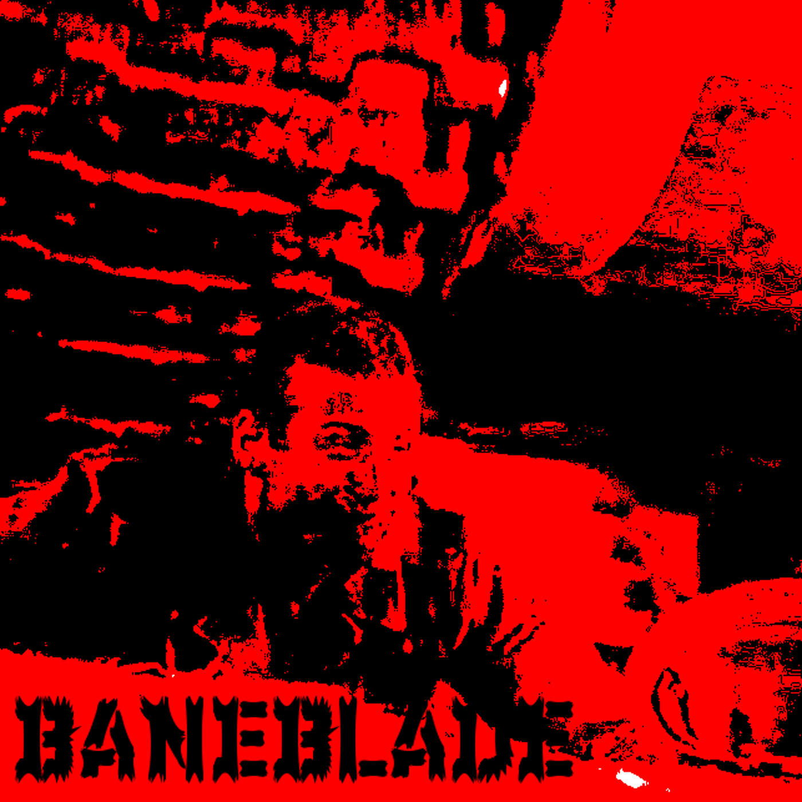

Latest Posts
Your Guide to RABM
Want to listen to some left-wing metal but don't know where to start? This guide will take you through all the essential left-wing and antifascist bands you can find within black metal.
Read more

Satanic Skinheads: The Music of the Ross Bay Cult
If black metal just isn't abrasive and underground enough for you, you might want to try the lesser-known black/death genre War Metal. We discuss it's origins and how it has developed.
Read more

Crushing Nazis and Warhammer 40k
I interview Dee Crucifix, the man behind BANEBLADE, and talk about his blend of war metal and industrial music, politics and his love of tabletop gaming.
Read more